The HeartRateLab identity: HeartRateLab set in JuliaMono Black (900), the three capitals tinted in the Julia palette, expressed as three lockups — balls under, to the side, and all-around — each with a matching bounce animation. This page collects the whole design process and the final marks.
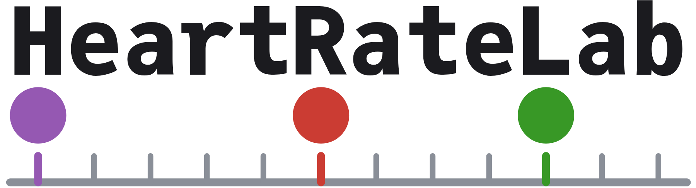
static · svg + png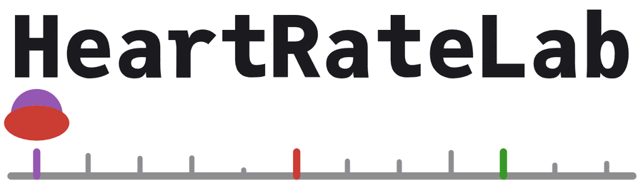
anim · gif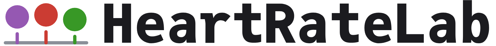
static · svg + png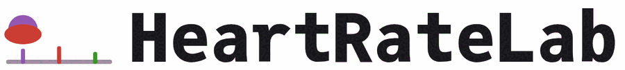
anim · gif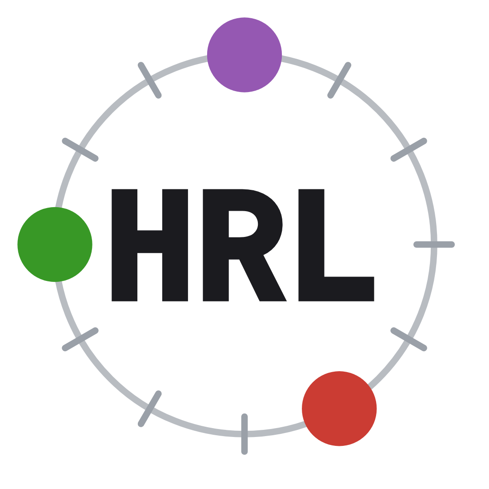
static · svg + png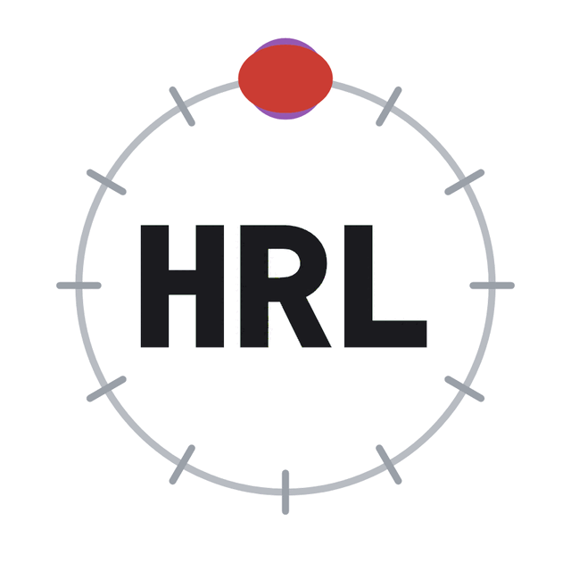
anim · gifStatic shown black-lettered; colour-cap variants and every animation mode live in the reports below.
Assets: final/logo_{under,side,ring}.svg /.png · final/anim_{under,side,ring}.gif.
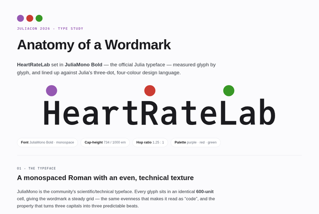
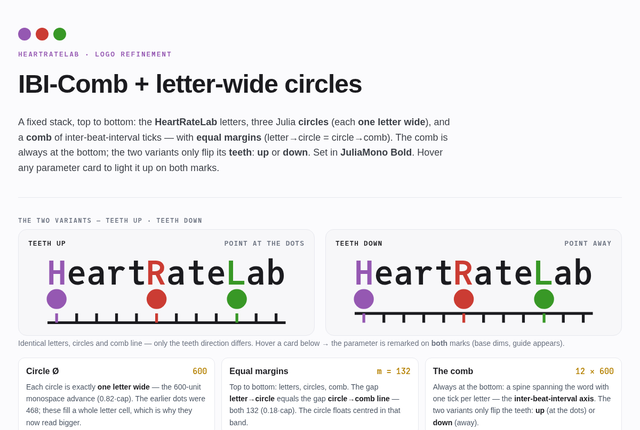
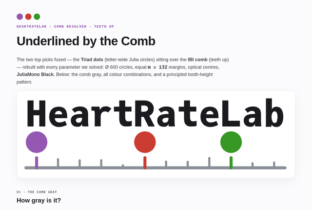
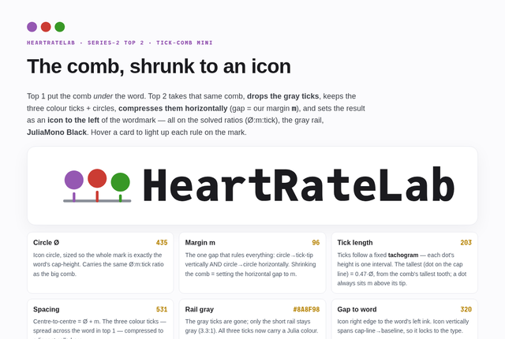
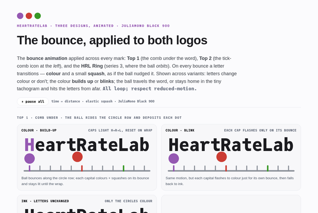
Earlier exploration (kept for the record): the 60-logo set · series 2 · series 3.
metrics_900.json (re-measured on Black). All figures regenerate from
build_comb2/3/4.py and build_final.py.